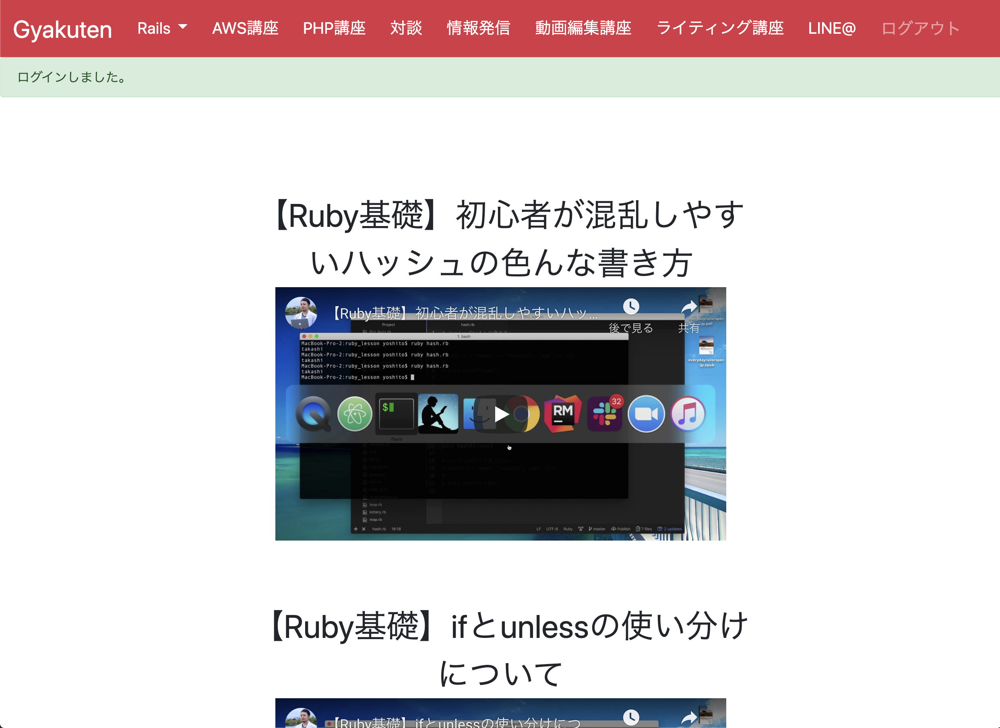
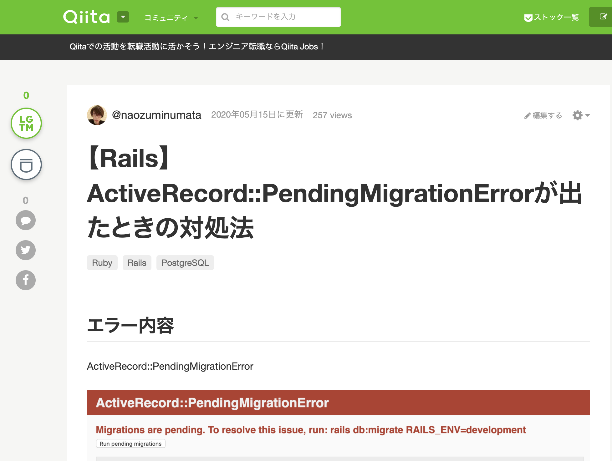

沼田直純 Portfolio Site
about me
生年月日
1991年2月25日生まれ (29歳)
経歴
-
・2015年3月： 創価大学大学院 (博士前期課程) 工学研究科 生命情報工学専攻 修了
生命情報工学修士（修士号）取得学部生時代の研究課題を自分の手で完結させたいと考え，博士前期課程に進学しました。
DNAを組み換えてタンパク質を発現させることで新規機能を持つ機能性タンパク質の作成に携わりました。
研究目的は医療現場で使用されることを想定したバイオチップで用いる部品を作成することです。
物質を輸送するタンパク質であるキネシンのDNAを組み換えることで目的の物質だけを吸着し、荷物を運ぶ機能性タンパク質を作成することに成功した。
当時の課題は，目的の物質を吸着させて運ばせることが中々できなかったこと。
それに対し，ビオチン-アビジンによる強い結合に着目し、実際に荷物を運ばせることに成功しました。
実験を証明するために、GFPと呼ばれる光る物質を荷物に見立てて、光る物質がレール状に動くことで荷物を運べていることを証明しました。
真剣に課題と向き合い、何通りもの条件を検討し実験系を確立しました。
答えが確立されていない課題に対して解決策を模索し解決する問題解決能力が身につきました。 -
・2015年4月： 株式会社モスフードサービス 就職
3ヶ月の本部研修後、約4年半の間、直営店の店舗勤務に配属しました。
この期間に副店長、店長職を経験しました。
発注から原価管理、人員管理、シフト作成、売上げを向上させるための企画など、一通り任せて頂きました。
強く印象に残っているエピソードとしては、店長として2店舗目に配属となった店舗での出来事です。
その店舗では裏口付近にゴミ庫があるのですが、ゴミ庫の衛生管理が疎かになっており、ゴミを出す度に高確率でネズミと出くわすほど不衛生な状態でした。
私は衛生管理はお客様に見えない部分でも徹底したいという気持ちと、また従業員もゴミを出すのが億劫になるほど酷かったので、
毎日1回はブラシを使った清掃をルーティーンに組み込み、見違えるほどゴミ庫と裏口の通路が綺麗にすることに成功しました。
やり方としては、
①ネズミが近寄りにくい環境になるよう清掃業者と相談
②普段から清掃して衛生状態を保つために、高圧ジェットなど掃除用具を準備、
そしてより簡単にできるように改善
③自らが毎日清掃する
④従業員一人ひとりに理由を説明して清掃することをお願いする
この経験を経たことで、何気ないエピソードではありますが、
自分が主体的に動いて周りを巻き込んで動かすことの大切さと楽しさを学び、
実践して仕事をやり切ることが出来ました。
-
・2019年11月 ： 株式会社AEVIC システム開発部 就職
プログラミングスキルを本格的に仕事として学びたいと考え、IT企業に就職。
HTML, CSS, javascript, Javaを使用した3ヶ月のチーム研修を経て、
客先常駐ではありますが、SQLを用いたデータの管理を行う業務を約1年ほど経験しました。
GitBucketを用いたチーム開発を経験し、現場ではSQLによるデータ管理の扱いに慣れました。
また、仕事以外でも RubyやAWSを使用したアプリ開発をすることで技術力を高める努力
を継続しております。
学習したプログラミングスキル
2019年11月1日から現在まで継続して学習を続けています。
- ・HTML, CSS, SCSS
- ・JavaScript, jQuery
- ・PHP, Laravel
- ・Ruby, Ruby on Rails
- ・Java
- ・Git, GitHub
※成果物については下記参照ください
どの様な業務をしたいか
人が抱える課題を解決するためのプロダクト開発に携わりたいです。
・常にユーザーが使いやすいサービスを目指します
・より多くのユーザーに喜んでもらえるサービスを目指します
どの様なエンジニアになりたいか
接客業を通して、人の役に立つことに喜びを感じました。
長年続けた接客業を辞めてまでIT企業を志た理由は，「IT
を駆使したサービスの開発・運用に携わる事で，より多くの人の役に立つ事ができる」と考えたからです。
1.課題解決
暮らしや働き方をより便利に，効率的にする事ができるのがITだと考えています。
従来のやり方を考え直し，より生産的に改善出来るようなサービスを提案するために積極的に行動していきます。
2.自ら考えてアイデアを実践する
エンジニアの良いところは、思い描いたものを制作し、提供できるところです。
ユーザーの思いや欲しい機能をアプリとして実現できるようなエンジニアになります。
3.自己研鑽を怠らない
現状に満足しているようではその時点で成長が止まってしまいます。
より良いパフォーマンスを出せるように、昨日より今日、今日より明日、また一歩前進できたと
言えるように、日々、技術力に磨きをかけていきます。
Ruby on Rails
MyBooks
制作したアプリへのリンク

MyBooksの実行動画
アプリの概要
読んだ本を記録したり、おすすめの書籍を紹介しあうことができる本好きのためのサイトです
- ・おすすめ本紹介アプリ
- ・読んだ本に対して感想や評価を自由に記入して投稿できる
- ・利用者が投稿した内容が一覧で見れる
- ・本の画像からAmazonの購入ページに飛ぶことが可能
- ・非同期処理によるいいね機能あり
- ・投稿した数（読んだ本の数）によってランキングする機能あり
ソースコード
GitHub(MyBooks)こだわりポイント
- ・初めて Ruby & Rails を使用して作成したアプリ
- ・データベースからのデータの取り出しと加工に Ruby & Rails を使用
- ・ログインしないと閲覧できないページやパスワードを暗号化して保存する等の処理を実装
- ・Ajaxによる非同期処理のいいね機能搭載
- ・友人やSNSを通してアプリを実際に使ってもらい、運営している
- ・AWSのEC2インスタンスにデプロイして管理している
使用したGem
- ・bootstrap：レスポンシブデザイン
- ・Devise：ログイン機能
- ・activeadmin：アプリ管理画面
- ・carrierwave：画像アップロード
- ・rmagick：画像の加工
- ・pry-byebug：アプリデバッグ
共同開発
制作したアプリのイメージ
trelloでアプリの進捗を管理

アプリの概要
3人1組による共同開発を経験しました。
- ・所属するサロンの Web ページ(Rails)のクローンサイトをサロンのメンバーと共同で作成
- ・PM＋3人チームで共同開発で制作
- ・トップページの動画教材画面，質問投稿・応答画面の実装を担当
こだわりポイント
- ・所属するオンラインサロンのメンターがPMとなり、サロンメンバー3名で Web ページを開発
- ・trello でタスク管理。Slack を使用してコミュニケーション。
- ・ローカル環境でbranch を切って開発，プルリク，コンフリクトの解消の流れを学習
- ・変更箇所をメンバーに分かりやすく伝える事を意識してプルリクを作成
- ・利便性を考えてオリジナルサイトに無い Flash などの機能を追加
Others
Qiita記事投稿
Qiita 記事
Qiita 記事
- ・自分が調べた時に情報が少かった事を中心に，Qiita に投稿
- ・技術記事を投稿することで知識の定着に繋がる
- ・自身の備忘録になる
→これからも学習して得た知識は，どんどん共有していきます。